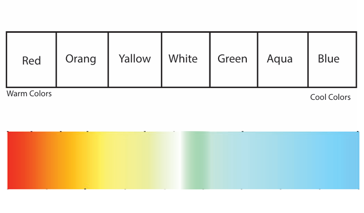
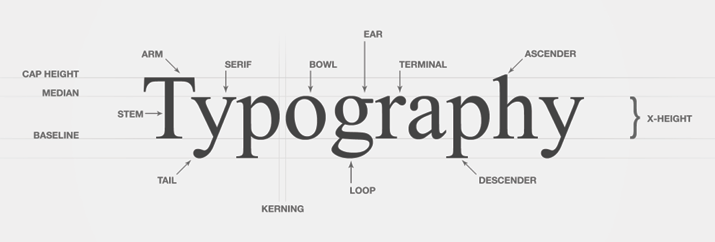
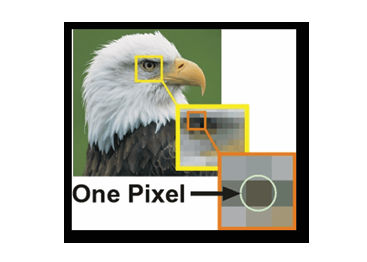
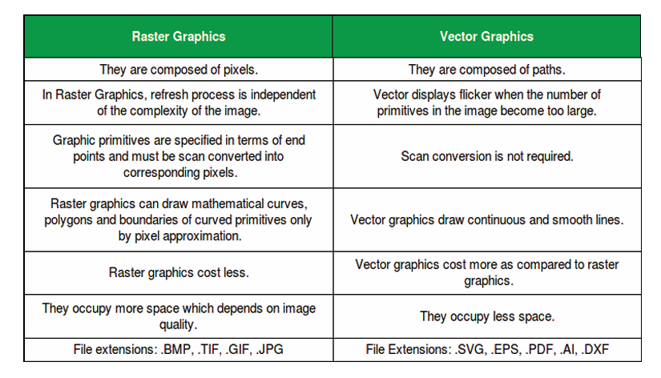

What is Graphic Design ?
Graphic design is the art of creating visual content, which includes using typography,images,
colors, and shapes tocommunicate a message or idea. Its ultimate goal
is to makeinformation easy to comprehend.
COLOR THEORY
Color theory is the historical body of knowledge describing the behavior of colors, namely in color mixing,
color contrast effects,color harmony, color schemes and color symbolism
4.COLOR MIXING
__________TWO TYPE OF MEDIAS__________
1
VISUAL MEDIAS --->LIGHT BASED -->RGB MODEL2
PRINTING MEDIAS -->INK BASED -->CMYK COLOR MODEL
COLOR CODE
A SYSTEM OF MARKING THINGS WITH DIFFERENT COLOURS AS A MEANS OF IDENTIFICATION
Example:Red : #FF0000 --->RED Color
COLOR PHILOSOPHY
The philosophy of color is a subset of the philosophy
of perception that is concerned with the nature of the perceptual experience of color

COLOR TEMPERATURE SCALE

TYPOGRAPHY
Typography is the art and technique of arranging type to make written language legible, readable and appealing
when displayed. The arrangement of type involves selecting typefaces, point sizes, line lengths,
line spacing, letter spacing, and spaces between pairs of letters

COMPUTER GRAPHICS
computer graphics is a system of creating or drawing a visual content in graphical display screen with the help of programing and hardware of the computer
WHAT IS PIXELS

-->Pixel is a single colored cube to creating an image in a graphical display based on speci c color intending program lines
-->Pixel is Basic Unit of Graphics
-->Pixel is Smallest Visual Content in Graphics
Two Type Graphics Based on Pixel Quality
